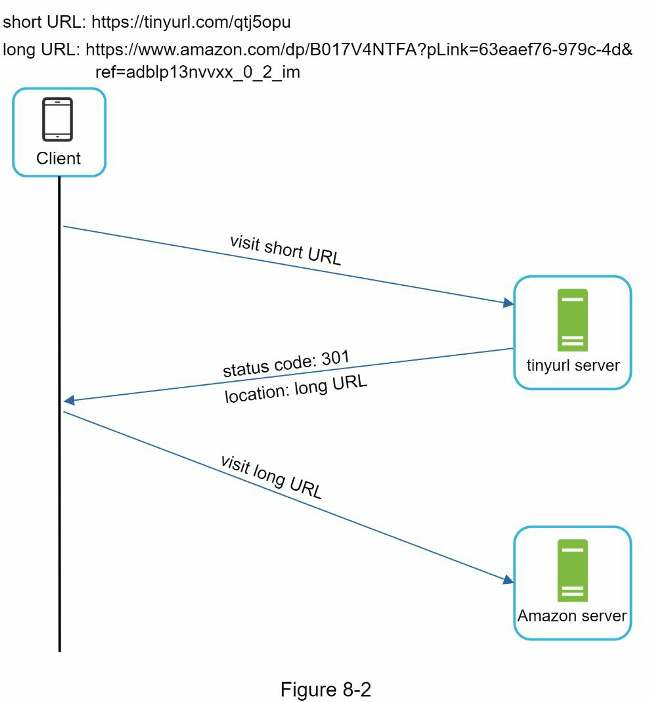
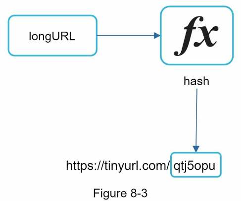
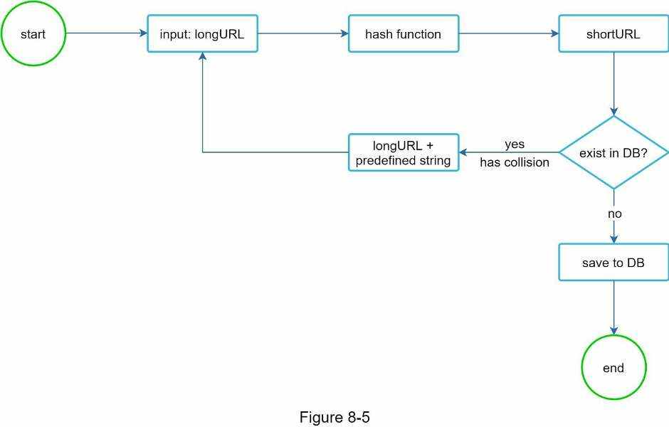
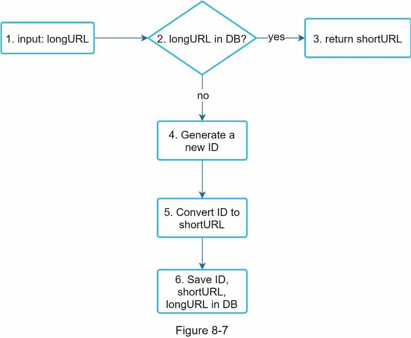

Chapter 8 · Design problem
Design a URL Shortener
The classic TinyURL question: size it, pick 301 or 302, work out why codes are 7 characters, compare hashing with base-62 conversion, and walk the shorten and redirect flows.
TL;DR
- Scale: 100 million new URLs/day → ~1,160 writes/s, 11,600 reads/s (10:1), 365 billion records in 10 years (~36.5 TB at 100 bytes each).
- APIs:
POST api/v1/data/shorten {longUrl}→ short URL;GET api/v1/shortUrl→ redirect. - 301 vs 302: 301 is permanent and cached by the browser (less load); 302 sends every click through you (better analytics).
- Storage: relational table
(id, shortURL, longURL); an in-memory hash table is too expensive. - Length: 62 characters
[0-9a-zA-Z]; 627 ≈ 3.5 trillion ≥ 365 billion → 7 characters. - Making the code: hash (CRC32/MD5/SHA-1), keep 7 characters and resolve collisions, or base-62 encode a unique ID. Base 62 wins: no collisions, but length grows with the ID and codes are guessable.
- Shorten: long URL already stored? Return its code. Else new ID → base 62 → save.
- Redirect: load balancer → web server → cache → database.
- Wrap-up: rate limiter, web/DB scaling, analytics, availability.

Interview answer skeleton
If asked this in an interview, walk through these four beats. Each maps to a step below.
- Clarify (≈5 min) Ask for an example, traffic (100M URLs/day), length (as short as possible), allowed characters (0-9, a-z, A-Z), delete/update (no). Estimate: 1,160 writes/s, 11,600 reads/s, 365 billion records, ~36.5 TB.
- High-level (≈10 min) Two endpoints: POST to shorten, GET to redirect. Choose 301 to cut server load or 302 for click analytics. Start from a hash table of <shortURL, longURL>.
- Deep dive (≈20 min) Relational table (id, shortURL, longURL). 627 → 7 characters. Compare hash + collision resolution with base-62 conversion, pick base 62 on a unique ID, then walk the shortening flow and the cached redirect flow.
- Wrap up (≈5 min) Rate limiter, stateless web tier, DB replication and sharding, analytics, availability/consistency/reliability.
Step 1Understand the problem and establish design scope
Two use cases, 100 million new URLs a day, and codes as short as possible from [0-9a-zA-Z].
| You ask | Interviewer says |
|---|---|
| Can you give an example of how a URL shortener works? | The original URL is https://www.systeminterview.com/q=chatsystem&c=loggedin&v=v3&l=long. The service creates a shorter alias, https://tinyurl.com/y7keocwj. Clicking the alias redirects you to the original URL. |
| What is the traffic volume? | 100 million URLs are generated per day. |
| How long is the shortened URL? | As short as possible. |
| What characters are allowed in the shortened URL? | Numbers (0-9) and characters (a-z, A-Z). |
| Can shortened URLs be deleted or updated? | For simplicity, no. |
Use cases
- URL shortening: given a long URL, return a much shorter URL
- URL redirecting: given a short URL, redirect to the original URL
- High availability, scalability and fault tolerance
Back-of-the-envelope estimation
| Quantity | Arithmetic | Result |
|---|---|---|
| Writes per day | given | 100 million |
| Writes per second | 100 million / 24 / 3600 | ≈ 1,160 |
| Reads per second | read:write = 10:1 → 1,160 × 10 | 11,600 |
| Records over 10 years | 100 million × 365 × 10 | 365 billion |
| Average URL length | assumption | 100 bytes |
| Storage over 10 years | 365 billion × 100 bytes | 36.5 TB (the book says 365 TB; see below) |
Walk through the assumptions and arithmetic with the interviewer so you agree on the numbers.
Step 2Propose high-level design and get buy-in
Two REST endpoints, a 301 or 302 redirect, and a hash function that maps a long URL to a short hashValue.
API endpoints
REST-style. A URL shortener needs two:
| Use case | Endpoint | Request | Returns |
|---|---|---|---|
| Shorten | POST api/v1/data/shorten | {longUrl: longURLString} | shortURL |
| Redirect | GET api/v1/shortUrl | the short URL | longURL, for the HTTP redirect |
URL redirecting
The server answers a short-URL request with a 301 redirect to the long URL. What the browser sees (Figure 8-1, other headers omitted):
Request URL: https://tinyurl.com/qtj5opu
Request Method: GET
Status Code: 301
...
location: https://www.amazon.com/dp/B017V4NTFA?pLink=63eaef76-979c-4d&ref=adblp13nvvxx_0_2_im
location header; the client then fetches the long URL itself.301 vs 302 redirect
| 301 redirect | 302 redirect | |
|---|---|---|
| Meaning | URL "permanently" moved to the long URL | URL "temporarily" moved to the long URL |
| Browser caches it? | ✓ Later requests go straight to the long-URL server | ✗ Every request hits the shortener first, then redirects |
| Server load | Low: only the first request for a URL reaches you | Higher |
| Analytics (click rate, click source) | Hard | Easy |
| Use when | The priority is reducing server load | Analytics are important |
The hash table approach
The most intuitive implementation is a hash table of <shortURL, longURL> pairs. Redirecting is then:
longURL = hashTable.get(shortURL)
// then perform the URL redirectURL shortening
Assume short URLs look like www.tinyurl.com/{hashValue}. You need a hash function fx that maps a long URL to the hashValue.

The hash function must satisfy two requirements:
- Each longURL is hashed to one hashValue.
- Each hashValue can be mapped back to the longURL.
Step 3Design deep dive
Store mappings in a relational database, make 7-character base-62 codes from unique IDs, and put a cache in front of reads.
Data model
A hash table is a fine start, but memory is limited and expensive, so store the <shortURL, longURL> mapping in a relational database. The simplified url table (Figure 8-4):
| Column | Notes |
|---|---|
id | Primary key, auto increment |
shortURL | The hashValue, e.g. zn9edcu |
longURL | The original URL |
Hash value length
The hashValue uses [0-9, a-z, A-Z]: 10 + 26 + 26 = 62 possible characters. Find the smallest n with 62n ≥ 365 billion (the estimate).
| n | Maximum number of URLs (62n) |
|---|---|
| 1 | 62 |
| 2 | 3,844 |
| 3 | 238,328 |
| 4 | 14,776,336 |
| 5 | 916,132,832 |
| 6 | 56,800,235,584 (≈ 56.8 billion: too few) |
| 7 | 3,521,614,606,208 ≈ 3.5 trillion |
3.5 trillion easily holds 365 billion URLs, so the hashValue is 7 characters. Two ways to produce it follow.
Approach 1 · Hash + collision resolution
Hash the long URL with a well-known hash function. Results for https://en.wikipedia.org/wiki/Systems_design:
| Hash function | Hash value (hexadecimal) |
|---|---|
| CRC32 | 5cb54054 |
| MD5 | 5a62509a84df9ee03fe1230b9df8b84e |
| SHA-1 | 0eeae7916c06853901d9ccbefbfcaf4de57ed85b |
Even the shortest (CRC32, 8 characters) is too long. Keeping only the first 7 characters can cause hash collisions. To resolve them, recursively append a new predefined string to the long URL and hash again until the shortURL isn't already in the DB:

This eliminates collisions, but querying the database for every request is expensive. A bloom filter (a space-efficient probabilistic test of whether an element is in a set) can improve performance.
Approach 2 · Base 62 conversion
Base conversion rewrites a number in a different number system. Base 62 matches the 62 possible characters:
| Value | 0–9 | 10–35 | 36–61 |
|---|---|---|---|
| Character | 0–9 | a–z (a = 10) | A–Z (Z = 61) |
Worked example: convert 1115710 to base 62
11157 = 2 × 622 + 55 × 621 + 59 × 620 = [2, 55, 59] → [2, T, X]. Divide by 62 repeatedly and read the remainders from bottom to top (Figure 8-6):
| Divide | Quotient | Remainder | Base-62 character |
|---|---|---|---|
| 11157 ÷ 62 | 179 | 59 | X |
| 179 ÷ 62 | 2 | 55 | T |
| 2 ÷ 62 | 0 | 2 | 2 |
So the short URL is https://tinyurl.com/2TX.
Encode a decimal ID to see the repeated division by 62, or decode a short code back to its ID. The presets are the book's two examples.
Comparing the two approaches
| Hash + collision resolution | Base 62 conversion | |
|---|---|---|
| Short URL length | Fixed | Not fixed: grows with the ID |
| Needs a unique ID generator? | No | Yes |
| Collisions | Possible, must be resolved | Impossible, because IDs are unique |
| Can someone guess the next short URL? | No: it doesn't depend on an ID | Yes, if the ID increments by 1 per entry. This can be a security concern. |
URL shortening deep dive
The design uses base 62 conversion:
- Input: longURL.
- Check whether the longURL is already in the database.
- If it is, it was shortened before: fetch its shortURL from the database and return it.
- If not, the longURL is new. The unique ID generator creates a new ID (the primary key).
- Convert the ID to a shortURL with base 62 conversion.
- Save a new row with the ID, shortURL and longURL.

Concrete example
Input https://en.wikipedia.org/wiki/Systems_design. The unique ID generator returns 2009215674938, base 62 turns it into zn9edcu, and the row is saved (Table 8-4):
| id | shortURL | longURL |
|---|---|---|
| 2009215674938 | zn9edcu | https://en.wikipedia.org/wiki/Systems_design |
The distributed unique ID generator issues the globally unique IDs behind shortURLs. Building one in a highly distributed environment is hard; see Chapter 7.
URL redirecting deep dive
Reads outnumber writes, so the <shortURL, longURL> mapping is stored in a cache.
- A user clicks a short URL link:
https://tinyurl.com/zn9edcu. - The load balancer forwards the request to the web servers.
- If the shortURL is already in the cache, return the longURL directly.
- If not, fetch the longURL from the database. If it isn't in the database either, the user probably entered an invalid shortURL.
- The longURL is returned to the user.
Step 4Wrap up
We covered the API design, data model, hash function, URL shortening and URL redirecting. If there's time left, raise these:
- Rate limiter. Malicious users could send an overwhelming number of shortening requests. A rate limiter filters requests by IP address or other rules (see Chapter 4).
- Web server scaling. The web tier is stateless, so scale it by adding or removing web servers.
- Database scaling. Database replication and sharding are the common techniques.
- Analytics. Integrate an analytics solution to answer questions like how many people click a link and when.
- Availability, consistency and reliability. These are at the core of any large system's success (see Chapter 1).
Self-test
What are the traffic numbers for this design, and how do you derive them?
100 million writes/day ÷ 24 ÷ 3600 ≈ 1,160 writes/s. With a 10:1 read:write ratio, 11,600 reads/s. Over 10 years, 100 million × 365 × 10 = 365 billion records.
How much storage do 10 years of URLs need at 100 bytes each?
365 billion × 100 bytes ≈ 36.5 TB. The book prints 365 TB because it multiplies by 10 years a second time.
What are the two API endpoints?
POST api/v1/data/shorten with {longUrl: longURLString}, which returns the shortURL. GET api/v1/shortUrl, which returns the longURL for the HTTP redirect.
301 or 302: which one reduces server load, which one is better for analytics, and why?
301 (permanent) is cached by the browser, so only the first request reaches the shortener, which means less load. 302 (temporary) sends every request through the shortener first, so you can track click rate and source.
Why store the mapping in a relational database rather than a hash table?
A hash table in memory isn't feasible for real systems: memory is limited and expensive. The table is url(id PK auto increment, shortURL, longURL).
Why is the hashValue 7 characters long?
It uses 62 characters (10 + 26 + 26). You need the smallest n with 62n ≥ 365 billion. 626 ≈ 56.8 billion is too few; 627 ≈ 3.5 trillion is enough.
Why not just use CRC32, MD5 or SHA-1 output as the short code?
The outputs are too long (CRC32 is 8 hex characters, MD5 32, SHA-1 40). Keeping only the first 7 characters causes collisions, which must then be resolved.
How does hash + collision resolution handle a collision, and what makes it slow?
It appends a predefined string to the long URL and hashes again, repeating until the code doesn't exist in the DB. Checking the DB on every request is expensive; a bloom filter speeds up the membership test.
Convert 11157 to base 62.
11157 = 2 × 62² + 55 × 62 + 59 → [2, 55, 59] → 2TX, since 55 = T and 59 = X.
Compare hash + collision resolution with base 62 conversion.
- Length: fixed vs grows with the ID.
- Unique ID generator: not needed vs required.
- Collisions: possible vs impossible.
- Next URL guessable: no vs yes if IDs increment by 1 (a security concern).
Walk through the URL shortening flow.
If the longURL is already in the DB, return its shortURL. Otherwise get a new ID from the unique ID generator, convert it to base 62, and save (id, shortURL, longURL).
Walk through the redirect flow. What happens if the short URL isn't found?
Load balancer → web server → cache; on a miss, read the database; then return the longURL. If it's not in the database either, the user probably entered an invalid shortURL.
Name the wrap-up talking points.
Rate limiter (against floods of shortening requests), web server scaling (stateless tier), database replication and sharding, analytics, and availability/consistency/reliability.
Terms to know
- hashValue
- The short code after the domain, e.g.
zn9edcuintinyurl.com/zn9edcu. - 301 redirect
- "Moved permanently": the browser caches it and goes straight to the long URL next time.
- 302 redirect
- "Moved temporarily": every request comes back to the shortener first.
- Base 62
- A number system with 62 symbols (0-9, a-z, A-Z) used to write an ID as a short code.
- Hash collision
- Two different inputs that produce the same (truncated) hash value.
- CRC32 / MD5 / SHA-1
- Well-known hash functions with 8, 32 and 40 hex-character outputs.
- Bloom filter
- A space-efficient probabilistic structure for testing whether an element is in a set.
- Unique ID generator
- A service that issues globally unique IDs across many servers (Chapter 7).
- Rate limiter
- Caps how many requests a client can send, e.g. per IP address (Chapter 4).